Page-By-Page Source Map
The scanned PDF has thirteen pages. The rebuilt chapter preserves the chemistry notes, filled-in blanks, equations, trend statements, and review prompts, while drawing clearer diagrams for revision.
Structure of atoms, reading the periodic table, noble gases, bonding, halogens, alkali metals, trends, and semiconductors.
Electron shells, periods, groups, valence electrons, first 20 electron structures, and periodic table trends.
Period 3 metals to non-metals, oxide nature, and atomic radius decreasing across a period.
Atomic and ionic radius visualization, visible-light scale, and Group 0 noble gases. These two scan pages repeat the same content.
Noble gas properties, Group 17 halogens, displacement, chlorine toxicity, disinfectant use, and bleach comparison.
Group 1 properties, trends down the group, and transition metals.
Metal reactivity, reactions with water, acid, salt solutions, and displacement reactions.
Rusting, copper patina, and the final revision checklist. The margins also contain unrelated handwritten doodle notes.
Structure Of Atoms
The arrangement of electrons around the nucleus of an atom is very important because it determines many chemical properties. Each shell holds a different maximum number of electrons and has a different energy level.
Holds 2 electrons in the introductory shell model.
Holds 8 electrons.
Treated as holding 8 electrons for the first 20 elements in this lesson.
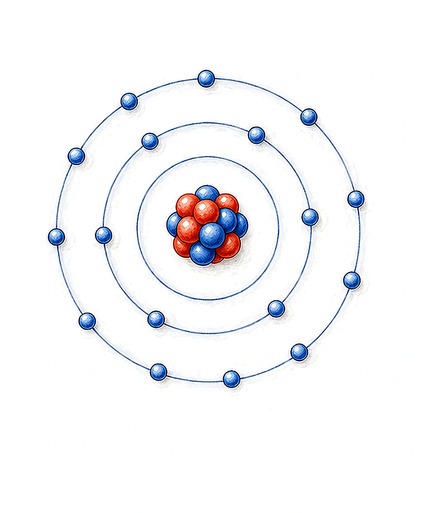
How To Read The Periodic Table
Chemical reactions are easier to predict when you know where an element sits in the periodic table.
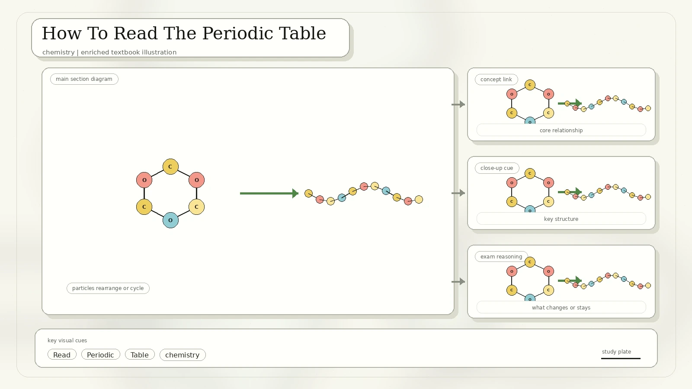
Horizontal rows of elements are called periods. The period number tells how many occupied electron shells the atom has.
Vertical columns are called groups. Elements in the same group have the same number of valence electrons in this simple model.
The outer shell furthest away from the nucleus.
An electron in the outer shell. Valence electrons control many bonding and reactivity patterns.
Electronic Structures For Proton Numbers 1-20
| Element | Proton number | Electronic structure | Period | Group pattern |
|---|---|---|---|---|
| Hydrogen, H | 1 | 1 | 1 | 1 valence electron |
| Helium, He | 2 | 2 | 1 | Group 0 noble gas |
| Lithium, Li | 3 | 2,1 | 2 | I |
| Beryllium, Be | 4 | 2,2 | 2 | II |
| Boron, B | 5 | 2,3 | 2 | III |
| Carbon, C | 6 | 2,4 | 2 | IV |
| Nitrogen, N | 7 | 2,5 | 2 | V |
| Oxygen, O | 8 | 2,6 | 2 | VI |
| Fluorine, F | 9 | 2,7 | 2 | VII |
| Neon, Ne | 10 | 2,8 | 2 | Group 0 noble gas |
| Sodium, Na | 11 | 2,8,1 | 3 | I |
| Magnesium, Mg | 12 | 2,8,2 | 3 | II |
| Aluminium, Al | 13 | 2,8,3 | 3 | III |
| Silicon, Si | 14 | 2,8,4 | 3 | IV |
| Phosphorus, P | 15 | 2,8,5 | 3 | V |
| Sulfur, S | 16 | 2,8,6 | 3 | VI |
| Chlorine, Cl | 17 | 2,8,7 | 3 | VII |
| Argon, Ar | 18 | 2,8,8 | 3 | Group 0 noble gas |
| Potassium, K | 19 | 2,8,8,1 | 4 | I |
| Calcium, Ca | 20 | 2,8,8,2 | 4 | II |
Why reactions happen: atoms react because their outer electrons can be lost, gained, or shared to reach a more stable electron arrangement.
Periodic Trends
A trend is a repeated pattern. The scan's trend graphic shows that properties change predictably across periods and down groups.
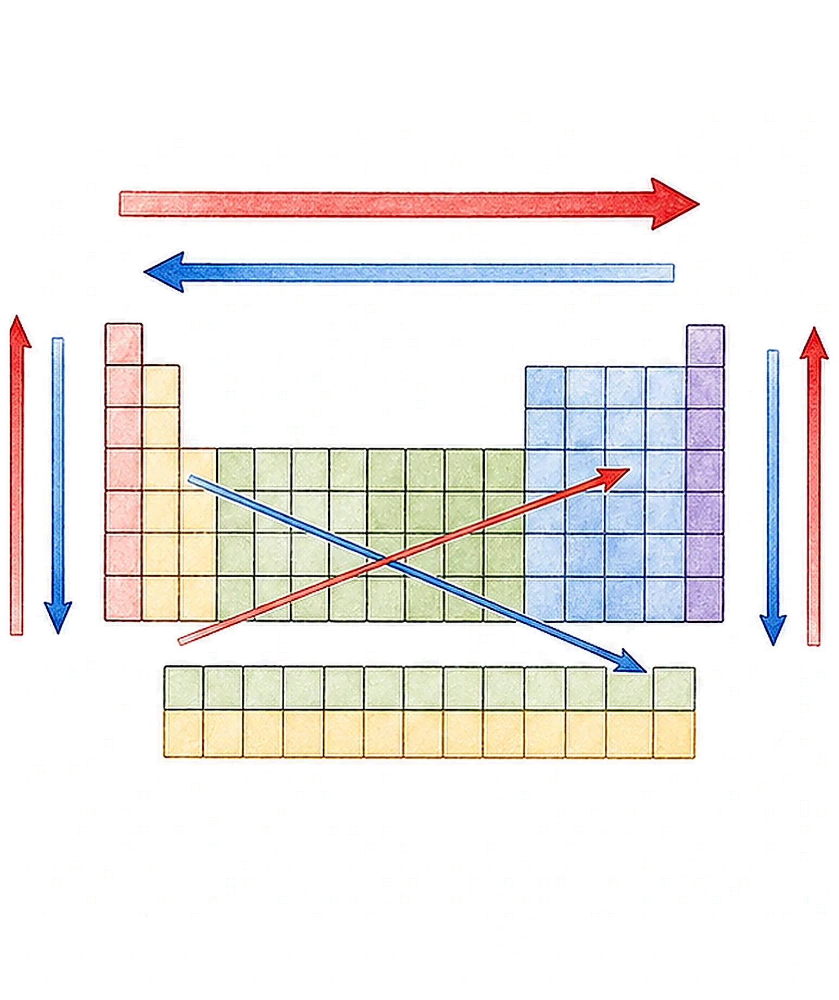
Across Period 3
Metals are grouped on the left-hand side of a period, and non-metals are grouped on the right-hand side. Period 3 is a good example.
| Group | I | II | III | IV | V | VI | VII | 0 |
|---|---|---|---|---|---|---|---|---|
| Symbol | Na | Mg | Al | Si | P | S | Cl | Ar |
| Name | Sodium | Magnesium | Aluminium | Silicon | Phosphorus | Sulfur | Chlorine | Argon |
| Properties | Metallic | Metalloid | Non-metallic | |||||
| Nature of oxide | Basic | Amphoteric | Acidic or no common oxide for argon | |||||
Atomic radius across a period: atomic radius generally decreases from left to right because proton number increases while electrons enter the same shell, so the stronger positive nucleus pulls the negative electrons closer.
Atomic Radius And Ionic Radius
Atomic radius is tiny: isolated neutral atoms range roughly from 30 pm to 300 pm. That is far below the wavelength of visible light, so atoms cannot be seen with a normal light microscope.
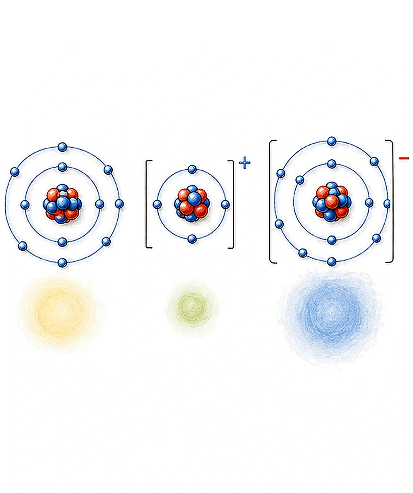
A metal atom that loses electrons has less electron repulsion and may lose its outer shell, so the positive ion becomes smaller.
A non-metal atom that gains electrons has greater electron repulsion, so the negative ion becomes larger.
Largest non-radioactive atom: usually cesium. Smallest atom: helium by common atomic-radius tables, though hydrogen is often discussed as the simplest atom.
Group 0 Noble Gases
The stable configurations in the scan are the noble gases: helium, neon, argon, krypton, xenon, and radon. They are called noble or inert gases because they are generally unreactive.
Group 0 or VIII/VIIIA in older notation.
Monoatomic: they exist as single atoms.
Colourless gases at room temperature.
Insoluble or only very slightly soluble in water.
Increases down the group.
Generally increases down the group as atomic mass increases.
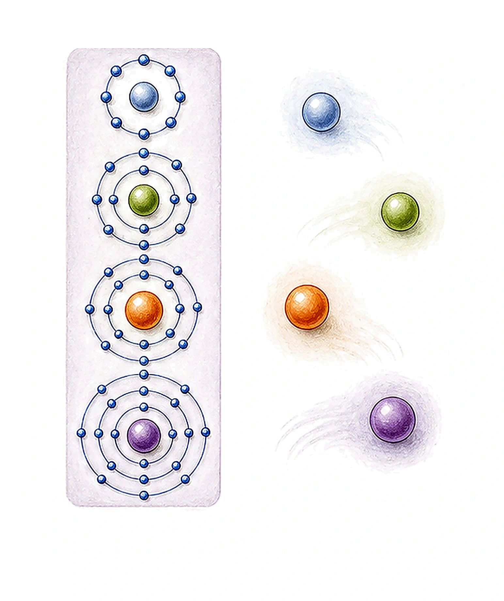
Why unreactive? Their lack of reactivity is due to electron configuration: full outer shells make electron loss, gain, or sharing unnecessary in ordinary conditions.
Group 17 Halogens
Halogens are Group VIIA or Group 17 elements: fluorine, chlorine, bromine, iodine, astatine, and tennessine. They are reactive non-metals.
Halogens have 7 electrons in their valence shell.
They accept 1 electron to form ions with a -1 charge, such as F- and Cl-.
They are oxidizers because they gain electrons from other substances.
Melting and boiling points increase, colours become darker, and reactivity decreases down the group.
Chemical Properties Of Halogens
Halogens react with most metals to form salts called halides. They also undergo displacement reactions with halide solutions.
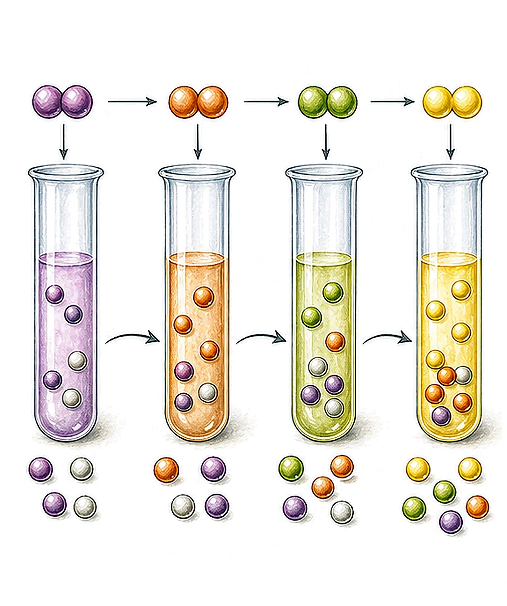
Why reactivity decreases down the group: atom size increases, so the nucleus attracts one more electron less strongly. It becomes harder for the atom to gain the electron needed for a -1 ion.
Chlorine Uses And Safety
The scan gives a useful safety section on chlorine gas and bleach. Chlorine chemistry is powerful, but it needs careful handling.
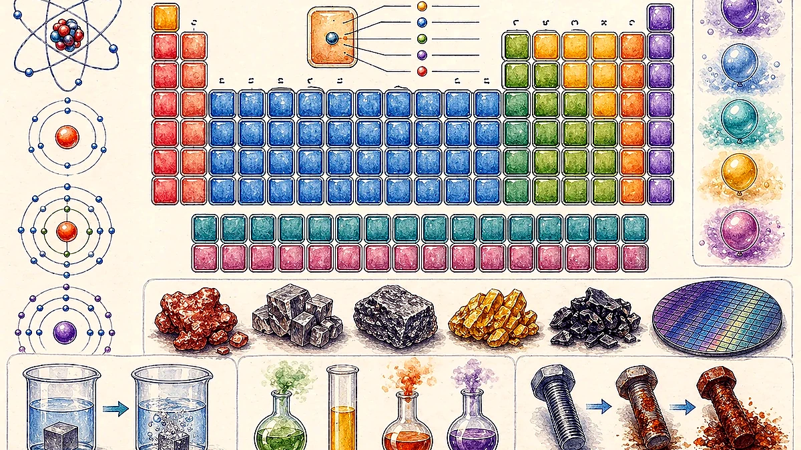
Cl2 is a greenish-yellow gas with a pungent, irritating odour.
It is poisonous and a pulmonary irritant that can damage the upper and lower respiratory tract.
Chlorine has many industrial uses, but it was also used as a chemical weapon in World War I.
Bleach is corrosive and can irritate skin and eyes. Mixed with certain cleaners, it can produce toxic gases such as chlorine gas.
Chlorine As A Disinfectant
| Use from the scan | What chlorine chemistry does |
|---|---|
| Water | Helps keep drinking water and recreational water safer by destroying waterborne pathogens linked with diseases such as cholera, typhoid fever, dysentery, hepatitis A, diarrhea, swimmer's ear, skin rashes, and athlete's foot. |
| Household disinfectant | Chlorine bleach whitens clothes and disinfects kitchen and bathroom surfaces. |
| Food and surfaces | Disinfects food-contact surfaces by destroying germs such as E. coli and salmonella. Chlorine chemistry is also used in agriculture and food safety systems. |
Oxygen Bleach vs Chlorine Bleach
| Type | Active ingredient | Strength and fabric effect | Safety note from the scan |
|---|---|---|---|
| Oxygen bleach | Oxygen, usually as peroxide | Gentler and safe for most fabrics; disinfects and whitens; more environmentally friendly. | Do not mix with vinegar. |
| Chlorine bleach | Chlorine, usually as hypochlorite | Stronger, but weakens fabrics; disinfects, whitens, and deodorizes. | Releases toxic compounds; do not mix with other products. |
Comparison: chlorine bleach is much stronger and more stable in the bottle; hydrogen peroxide is less damaging to fibres but decomposes to water and oxygen more readily.
Group 1 Alkali Metals
Alkali metals are Group IA or Group 1 elements. They are called alkali metals because they react with water to form alkaline metal hydroxide solutions.
Alkali elements are metals.
They are reducers because they lose electrons.
They have 1 electron in the valence shell.
They lose 1 electron to form +1 ions, such as Na+ and K+.
As metals, they conduct electricity.
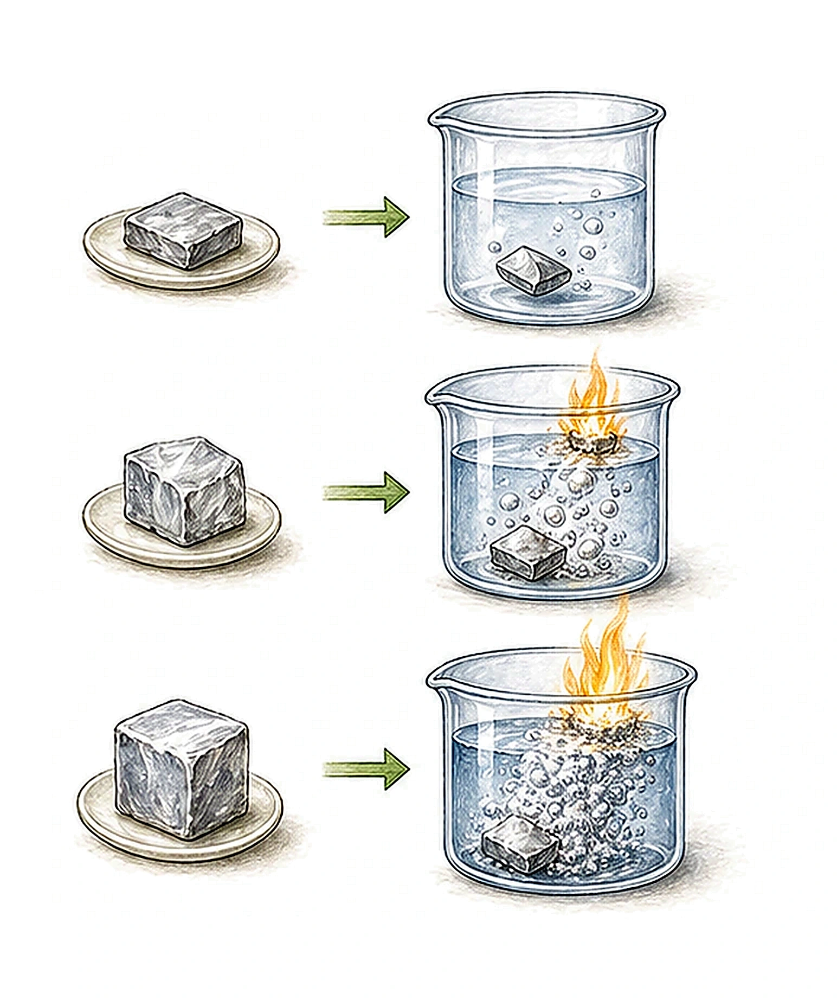
Transition Elements
Transition elements, also called transition metals, are the block of metals found between groups II and III in the simplified periodic table layout.
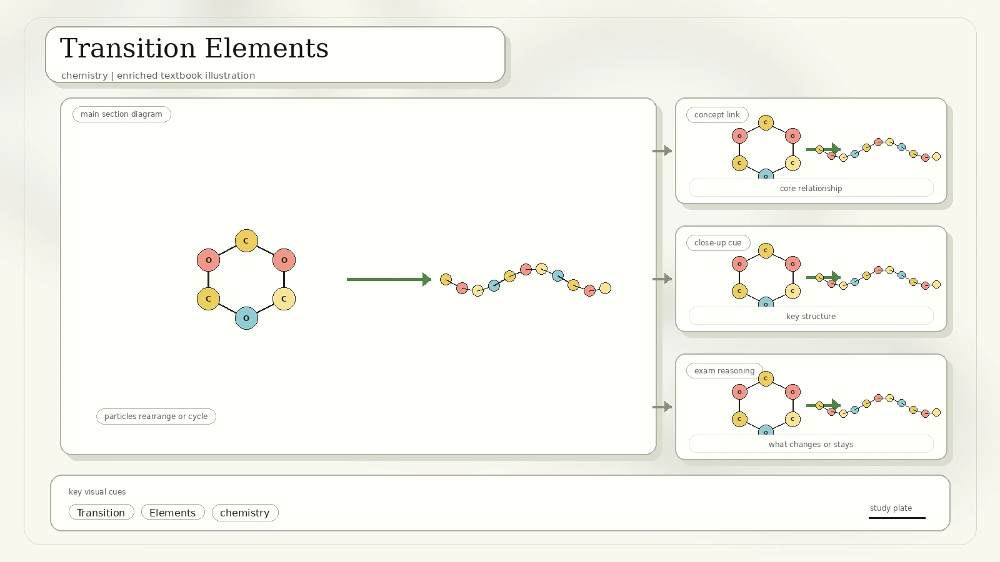
Iron, copper, zinc, nickel, as well as gold and silver.
Their melting and boiling points are generally higher than those of Group 1 and Group 2 metals.
Many transition metals form coloured compounds, which is useful in tests and pigments.
Extra note: zinc is often grouped with transition metals in school-level periodic table maps, although stricter definitions treat it differently because its common ion has a full d-subshell.
Metal Reactivity
The reactivity series orders metals by how easily they react. The scan lists three ways to determine the order: reactions with cold water or steam, reactions with dilute hydrochloric acid, and displacement from salt solutions.
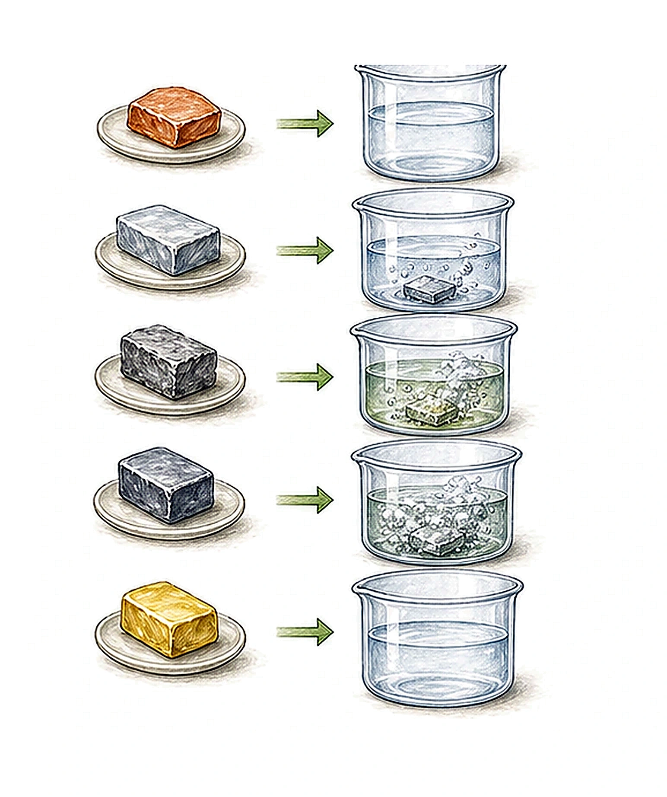
Metal Corrosion
Rusting is the corrosion of iron. The scan defines rusting as the slow oxidation of iron to form hydrated iron oxide.
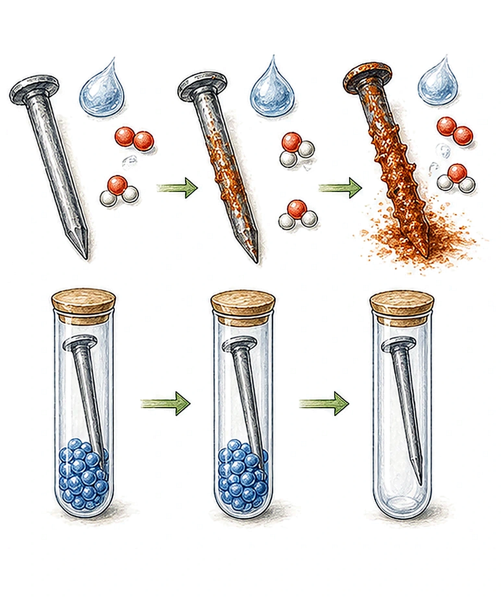
Iron Corrosion
Conditions from the scan: water and oxygen must be present with iron.
Fe + O2 + H2O -> hydrated iron oxide
Copper Patina
Copper corrodes differently. It forms a green patina containing copper carbonate and copper hydroxide.
Patina equation from the scan: 2Cu + O2 + CO2 + H2O -> CuCO3 + Cu(OH)2. This explains why copper statues can turn green instead of reddish-brown.
Semiconductors
The overview lists semiconductors, but the scanned pages do not develop the topic in detail. The most useful connection is silicon: it sits near the metal/non-metal boundary and has four valence electrons.
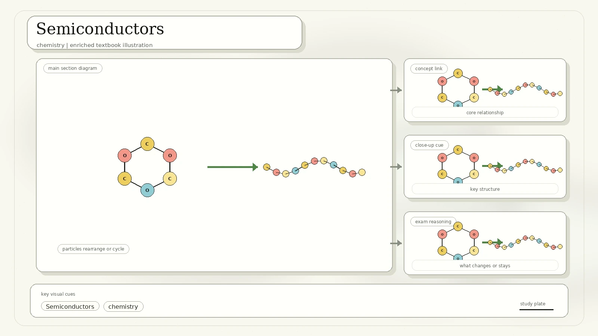
Semiconductors conduct electricity better than insulators but worse than metals.
Silicon is a metalloid in Period 3, Group IV. Its bonding network can be controlled in electronic devices.
Adding tiny amounts of other elements changes the number of mobile charge carriers.
Electron configuration and periodic position explain why semiconductor behaviour is tunable.
Wrap Up
The final scan page lists the main revision targets. Use this checklist to test whether Week 06 is secure.
Rebuilt from the Week 06 scanned PDF, IMG_20260427_0006.pdf. The chemistry diagrams are newly drawn in HTML/SVG. Unrelated handwritten marginal doodles on the final page were not used as lesson content.